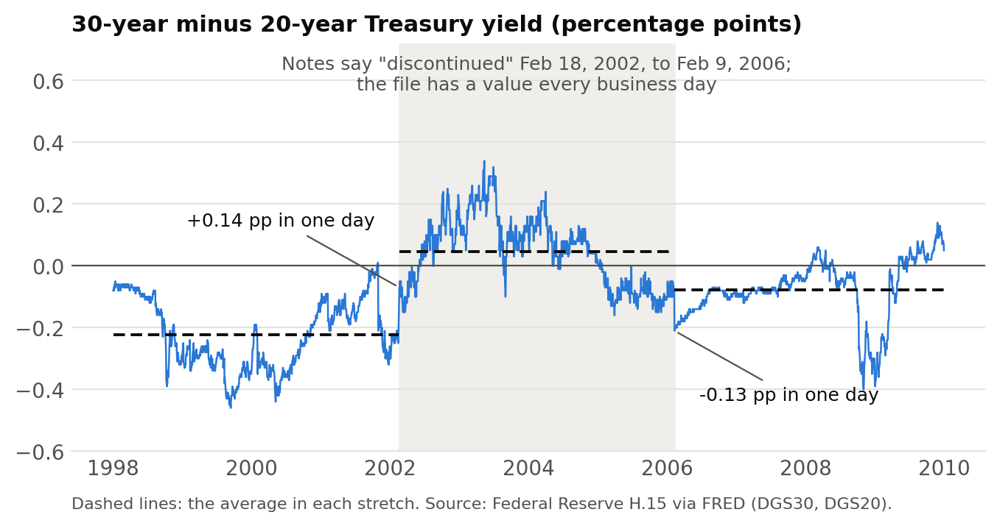
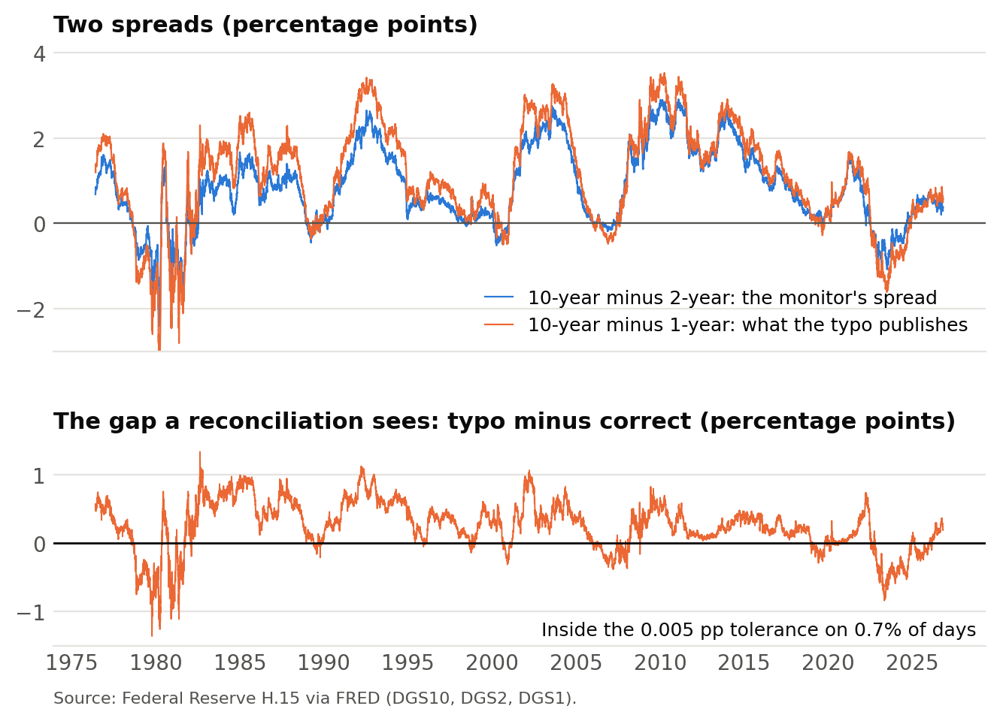
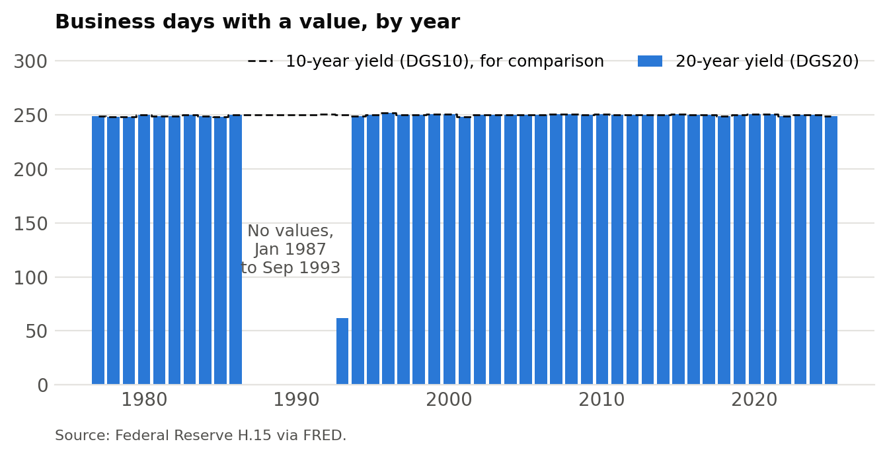

Data Validation#
The monitor you deployed last week checks itself twice before it publishes
(Checks before anything publishes). Its unit
tests check the code, and check_history checks that the history is
plausible: no duplicate dates, no spread beyond six points, nothing stale.
This page is about the check that comes after those two, and the one firms
ask for by name: whether the numbers are right.
Firms ask for it by name#
Eight of the ten job postings archived in the appendix ask for it.
Firm |
What the posting asks for |
|---|---|
“turn messy, real-world datasets into reliable inputs for research and trading”; “Clean, well-structured data is the difference between noise and a profitable trading signal.” |
|
“Setup ‘data checks’ and alerts to determine when the data is ‘bad’” |
|
“Perform data reconciliations, validations, and quality checks”; “Find anomalies in derived datasets and trace the issues back to their source” |
|
“Build automated data validation test suites” for “data quality, data availability and data correctness” |
|
“Implement data quality and control processes”; “Proven expertise in developing data quality control processes to detect gaps or inaccuracies” |
|
“Work with users to ensure data integrity and availability” |
|
“ensure firm wide data integrity” |
|
“data management and quality”; “Design solutions that improve data quality” |
Hudson River Trading’s two lines describe the whole job: reconcile the data against other sources, validate it, and when something is off, find the step that made it wrong. Akuna’s last word is the one to hold on to. Quality and availability can be checked from inside the pipeline. Correctness is a claim about the world, and checking it takes something from outside the pipeline.
Plausible is not correct#
The monitor publishes the 10-year Treasury yield minus the 2-year. It pulls
the two yields from FRED, where each series has an ID: DGS10 is the
10-year yield and DGS2 is the 2-year. One line in src/pull_yields.py
says which IDs to pull and what to call each one in the code:
SERIES = {"DGS10": "y10", "DGS2": "y2"} # FRED ID: column name
The spread is then y10 - y2. Now suppose a typo turns DGS2 into DGS1,
which is also a real FRED series, the 1-year yield:
SERIES = {"DGS10": "y10", "DGS1": "y2"} # typo: DGS1 is the 1-year yield
FRED returns the 1-year yield without complaint, the code stores it in the
column named y2, and the monitor computes and publishes the 10-year minus
the 1-year, labelled as the 10-year minus the 2-year. Nothing breaks:
Every unit test passes. The tests hand the functions yields they built themselves; none of them asks FRED which series is which.
Every plausibility check passes. The 10-year minus the 1-year is a real spread: fresh, one row per date, and well inside six points.
The page publishes the wrong spread every day, and every run reports success.
Nothing in the pipeline compared the number with anything the pipeline did not make. That comparison is data validation.
Three kinds of check
A unit test checks your code against what you meant it to do. You write the input and the expected answer.
Data validation checks your data against something you did not produce: a second source, an identity the data must satisfy, or what is known about how the series behaved. The expected answer comes from outside the pipeline.
A plausibility check asks only whether a number is possible. It is the cheapest kind of validation, and the monitor’s
check_historyis made of them.
All three can run under pytest. What makes a test a unit test or a validation is where its expected answer comes from, not the tool that runs it.
Why a unit test cannot do this job#
You write a unit test’s input and its expected answer, so the test holds whatever you believe about the data. If the belief is wrong, the code and the test agree with each other, and both are wrong.
HW 1 has an example (HW 1, the S&P 500 constituents). The
homework rebuilds the index from CRSP’s membership list: for each month-end
from 1990 to 2024, it asks which stocks were members that day and counts
them. You write the function that answers that question. CRSP defines
mbrenddt as the first date on which a stock is no longer a member, so
the right comparison is mbrenddt > date. Read it as the last day of
membership and you write >=, which keeps each stock one day too long: the
day it left. A fixture you build by hand carries the same reading, and the
test passes.
The HW 1 test looks at the output instead. S&P’s records are often one short at a month-end, because a company is dropped on the last trading day and its replacement joins the next. With the right comparison, about 21 percent of month-ends count fewer than 500 members. The off-by-one counts the departing stock on the day it left, so nearly all of those gaps vanish and the share falls to about 1 percent. The test asserts that at least 10 percent of month-ends fall below 500. It never looks at the comparison.
The expected answer came from CRSP’s definition and from how S&P records replacements, not from what you meant the code to do. That is what makes it a validation. Assume instead that the index always holds exactly 500, and the gaps look like a bug to fix.
Four kinds of validation#
From the cheapest to the most convincing. The figures use the same H.15 yields the monitor pulls, and two of them show real breaks in the published history.
1. Plausibility. Is the number possible? No duplicate keys, dates in order, values in range, a recent reading, no one-day move larger than anything in the series’ history. These catch breakage: a source that is down, a parse that went wrong, a change in how a series is built. They cannot catch a wrong number that looks like a right one.


Fig. 24 A jump the market did not make. The H.15 notes say the 30-year series was discontinued from February 18, 2002, to February 9, 2006, yet FRED’s file has a value for every business day in between. On the first day of that window the spread to the 20-year jumps 0.14 percentage points; on the last it falls 0.13. Fewer than one in a thousand other daily moves exceed 0.08. A jump check flags both days, and the notes explain them: during those years the Treasury published a factor for estimating a 30-year rate from the 20-year. A known cause makes this a flag, not a stop, and anyone using the series across 2002-06 should know the values there are built differently from those on either side.#
2. Identities and accounting. What must hold if the data mean what you think. Portfolio weights sum to one. Put-call parity holds for European options, within the bid-ask spread. A value-weighted return equals the weighted sum of its members’ returns. And every observation is accounted for: the rows that come in equal the rows kept plus the rows each filter drops, and each filter drops about as many as you expected.
3. Reconciliation. Your number against an independent source for the same quantity. In HW 1, your value-weighted market return against CRSP’s own index, and your Fama-French portfolios against Ken French’s. In HW 2, your fitted Treasury yields against the Fed’s published curve. For the monitor, FRED’s own spread series, T10Y2Y, which a test can compare against without storing or publishing it.


Fig. 25 The DGS1 typo, caught. The spread the monitor should publish and the
one the typo publishes move together, so a chart of either looks right. The
gap between them is inside the 0.005-point tolerance on 0.7 percent of the
12,601 days, so the reconciliation stops the typo on its first run.#
4. Behavior through time. Coverage with no unexplained breaks: the number of securities, firms, or observations by month. And the series doing what it is known to have done: the 10-year minus 2-year spread was negative for long stretches of 2000 and 2006-07, and from mid-2022 into 2024.


Fig. 26 A hole in the history. The 20-year series has no values from January 1987 through September 1993. A check on the newest reading never sees a gap like this; counting observations by year finds it at once. Before you use the 20-year yield across those years, you need to know why it stops.#
A reconciliation catches only the errors the two sources do not share.
T10Y2Y is computed from the same two yields the monitor uses, so it catches
the DGS1 typo, but it cannot catch an error in the yields themselves. The
more independent the second source, the more a match tells you.
Where it goes in the pipeline#
A validation is a task like any other, with one rule: it sits between the
data and whatever publishes them. Here is the check against T10Y2Y added to
the monitor. Two tasks are new, pull_benchmark and validate, and page
now depends on validate:
pull ───────────► history ───────► validate ───► page
(DGS10, DGS2) (the spread) ▲
│
pull_benchmark ───────────────────────┘
(FRED's T10Y2Y)
pull_benchmark is pull_yields.py with one series, T10Y2Y, saved to
_data/, which is never committed or published. Its path and the
comparison’s go in src/settings.py next to the others:
BENCHMARK_CSV = DATA_DIR / "t10y2y.csv" # FRED's spread, for comparison only
COMPARISON_CSV = OUTPUT_DIR / "spread_vs_fred.csv"
The check is one module, src/validate_spread.py, in the same shape as
update_history.py:
"""Check the spread history against FRED's own spread, T10Y2Y.
Data validation: the expected answer comes from outside the pipeline. Exits
non-zero, so that nothing publishes, if any day is off by more than the
tolerance.
"""
import sys
import warnings
import pandas as pd
import settings
TOLERANCE = 0.005 # percentage points; both are quoted to 0.01, so any real gap is larger
def compare(history, benchmark):
"""One row per date in both, with the gap between our spread and FRED's."""
both = history.merge(benchmark, on="date", how="inner")
both["gap"] = both["spread"] - both["t10y2y"]
return both[["date", "gap"]]
if __name__ == "__main__":
history = pd.read_csv(settings.HISTORY_CSV, parse_dates=["date"])
benchmark = pd.read_csv(settings.BENCHMARK_CSV, parse_dates=["date"])
comparison = compare(history, benchmark)
worst = comparison.loc[comparison["gap"].abs().idxmax()]
if abs(worst["gap"]) > TOLERANCE: # stop: the number is wrong
sys.exit(f"Not publishing: on {worst['date']:%Y-%m-%d} our spread "
f"differs from FRED's by {worst['gap']:+.2f} pp")
if len(comparison) < 0.95 * len(history): # flag: a person should look
warnings.warn(f"only {len(comparison):,} of {len(history):,} days could be compared")
comparison.to_csv(settings.COMPARISON_CSV, index=False)
In dodo.py, the page lists the comparison file as a dependency. The file
is written only when the check passes, and doit does not run a task whose
dependency failed, so a failed check leaves yesterday’s page up:
def task_validate():
"""Check the spread history against FRED's T10Y2Y before anything publishes"""
return {
"actions": ["python src/validate_spread.py"],
"file_dep": ["src/validate_spread.py", settings.HISTORY_CSV, settings.BENCHMARK_CSV],
"targets": [settings.COMPARISON_CSV],
}
def task_page():
"""Build docs/index.html from the history, once it has been validated"""
return {
"actions": ["python src/build_page.py"],
"file_dep": ["src/build_page.py", settings.HISTORY_CSV, settings.COMPARISON_CSV],
"targets": [settings.DOCS_DIR / "index.html"],
}
compare is ordinary code, so it gets an ordinary unit test: two
hand-built rows, one known gap.
HW 2 already has the same four pieces, written for you:
Piece |
The monitor, above |
HW 2’s yield curve |
|---|---|---|
Pull the benchmark |
|
|
Build the comparison |
|
|
Check it |
The page builds only if every gap is under 0.005 pp |
A test requires every maturity within 25 basis points |
Show it |
The page states the largest gap since 1976 |
Guide 02’s table and chart of the fit against the Fed’s |
HW 2 runs its check as a pytest test after doit; the monitor runs it as a
task before page. Either works when a person reads the results before
they go anywhere. When the pipeline publishes on its own, the check has to
be a task upstream of the publish.
When a check fails, trace it to the source#
A failed validation says a number is wrong, not where it went wrong. Finding that is the second half of Hudson River Trading’s line, and it depends on how the pipeline is built. When each step writes its output to disk, you check the input to the failing step, then the input to that one, until you reach the first step whose output is wrong. The error is in that step or in the data it read. A pipeline that does everything in one notebook gives you nowhere to look. ChartBook’s lineage (ChartBook: Know Where Every Number Came From) records which upstream each dataframe came from, so the trail crosses repositories too.
Once you have found the cause, write a unit test that reproduces it. The validation found the problem; the unit test keeps it from coming back.
Stop or flag#
Before writing a check, decide what its failure would mean. If you cannot say, it is not a check yet.
Stop when the number is wrong: a broken identity, a reconciliation outside its tolerance, a failed plausibility check. That is the monitor’s rule. The job stops and yesterday’s page stays up, because a stale page with a right number is better than a fresh page with a wrong one. In a pipeline task, a stop is a non-zero exit (
sys.exit); in pytest, it is anassert.Flag when something changed and a person needs to decide what it means: a filter that drops more rows than usual, a coverage break with a known cause, a vendor’s revision of history. Publish, and put the flag where a reader will see it. A flag is
warnings.warn, which prints without stopping the task, and which pytest lists in its summary without failing the run.
Set each tolerance before you see the results, and leave headroom. HW 1’s second S&P 500 approximation correlates with the published index at 0.99919. Its floor was once 0.999, which left 0.0002 of room, so a routine CRSP restatement could have failed correct code. The floor is now 0.998. A check that fails on routine revisions trains everyone to ignore it.
Show what you found#
A check that passes silently convinces only the person who wrote it. A reader trusts the results when they can see the evidence: your series plotted against the second source, with the difference beside it; a table of the observations each filter removes; coverage through time. HW 2’s second guide does this for the yield curve, with a table and a chart of the fit against the Fed’s. Each exhibit’s caption says what the check found and what it means for trusting the result.
Why it matters#
Data errors are quiet. A bug in the code usually crashes. An error in the data produces a number of the right shape, in a plausible range, and nothing in the pipeline complains. Usually someone downstream finds it: a trader, a portfolio manager, a reader of something you published.
The person using the number cannot see your code. What they rely on is that the number is right. That is what Jane Street means by the difference between noise and a signal.
This is the part you cannot hand off. An AI assistant will write your pipeline and unit tests that pass. Deciding what the right answer should be, and finding an independent source to check it against, takes knowing the data. That is the skill these postings are hiring for.
In the final project#
The rubric gives data validation its own 10 points: checks against something you know independently, run as tests in the pipeline, and at least one table and one figure that show what they found. The replication item is a reconciliation too, against the paper’s published numbers. Your pitch at the consultation says what your validation will check.